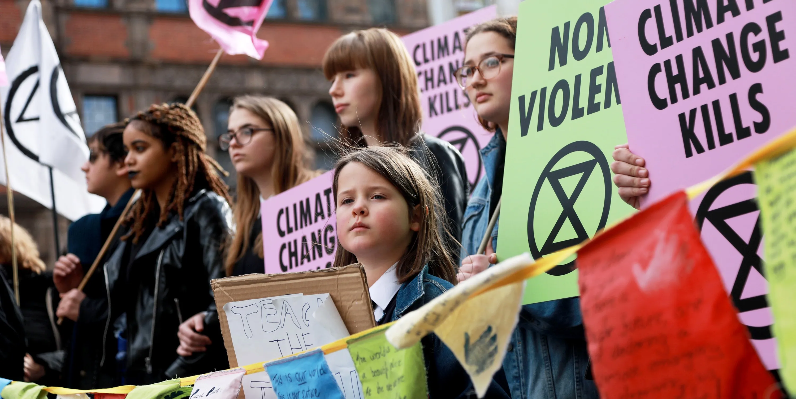

DISCOVER
Facing the Climate Challenge: Pathways to Action
Climate change is no longer a distant threat it’s a present reality shaping our world. This page explores the causes, impacts, and innovative solutions driving global efforts to combat the crisis, while empowering individuals and communities to take meaningful action.
The Urgency
Global temperatures have already risen over 1.1°C since the industrial revolution, and the consequences are unfolding rapidly. As glaciers melt, sea levels rise, and extreme weather becomes more frequent, the cost of inaction grows exponentially. The climate crisis is not a distant threat it's happening here and now. Scientists agree that the coming decade is critical to limit warming and avoid cascading ecological breakdown.
Visible Signs
From vanishing glaciers in the Arctic to submerged coastlines in South Asia, the physical signs of climate disruption are impossible to ignore. Once fertile lands are turning to dust, and natural disasters are intensifying with each passing year. Images of burning forests, flooded cities, and collapsing ice shelves serve as a sobering reminder of the urgent need for change.
Glacial retreat in the Alps
Rising seas threaten coastal infrastructure
Wildfires leave lasting scars on biodiversity
The Crisis Explained
The climate crisis is driven by decades of greenhouse gas emissions, largely from fossil fuels and deforestation. But it's also rooted in systems of inequality that have allowed a small number of industries to pollute freely while vulnerable communities bear the burden. The following video unpacks the science, history, and path forward in a way that's clear and actionable.
Resilient Communities
Around the world, communities are developing strategies to survive and thrive despite climate pressures. In flood-prone areas, mangrove forests are being restored to act as natural buffers. Farmers are shifting to drought-resistant crops and regenerative practices that rebuild soil health. Early warning systems are being expanded to provide life-saving alerts for storms and heatwaves. These solutions, though local, are part of a global shift toward resilience.

Green Innovation
Innovation is playing a critical role in climate solutions. Clean energy technologies like solar and wind are becoming more efficient and accessible, powering homes, schools, and industries in even the most remote regions. Meanwhile, smart city initiatives are transforming how we move, build, and consume—reducing emissions while improving quality of life.
Clean Energy
Across continents, solar fields are being installed to replace fossil fuel plants, providing affordable and clean electricity to communities long excluded from the grid. These technologies are also creating green jobs and reducing dependency on volatile energy markets.
Smart Cities
Cities are adopting digital infrastructure to optimize traffic flow, manage waste more efficiently, and reduce energy usage in buildings. These changes not only cut carbon emissions but also enhance safety and livability for millions of people.
Facts & Stats
Scientific data continues to underscore the gravity of the climate emergency. Average global temperatures have increased significantly since 1880. The energy sector remains the single largest contributor to emissions, accounting for nearly 40% globally. Studies suggest a 90% probability that extreme heatwaves will become more frequent in the coming decades. Furthermore, air pollution—closely tied to carbon emissions—is responsible for over 1.5 million premature deaths each year worldwide.
| Indicator | Statistic |
|---|---|
| Rise in Global Temperature | +1.1°C since 1880 |
| Energy Sector Emissions | ~40% of global CO₂ |
| Extreme Heatwave Likelihood | 90% higher in coming decades |
| Deaths from Air Pollution | 1.5 million+ annually |
Take Action
Every individual can contribute to the climate solution in meaningful ways. By making conscious choices—such as minimizing waste, conserving energy, and opting for sustainable transport—you reduce your personal carbon footprint. Supporting policies and leaders that prioritize climate action is equally vital. Community engagement, whether through education or activism, helps amplify collective impact. Remember, small consistent actions can lead to transformative change.
Global Voices
Across the world, youth leaders, indigenous activists, and climate defenders are speaking truth to power. Their stories are not only powerful they are essential. As the Pacific Island Youth Delegate proclaimed at COP: “We are not drowning, we are fighting.” These voices remind us that the climate struggle is about dignity, justice, and the right to a future.
Every Action Counts
Climate change is the defining challenge of our generation but also an opportunity to build a better world. From clean air and green jobs to justice and sustainability, the benefits of action are immense. You don’t need to be a scientist or activist to make a difference. It starts with awareness, followed by intentional action. Together, we can shape a future that’s safe, inclusive, and thriving for all.